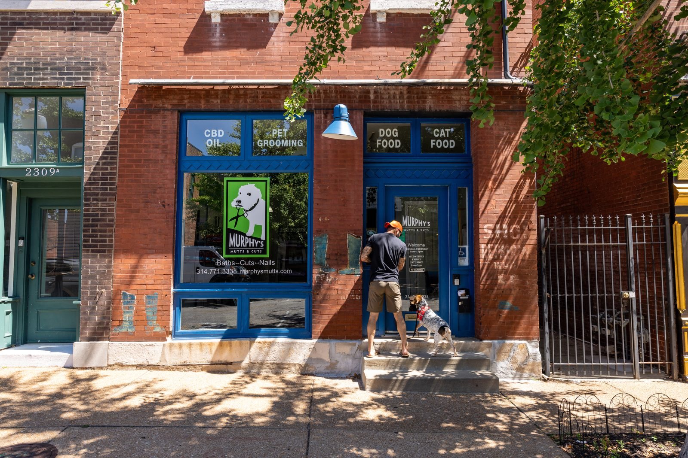
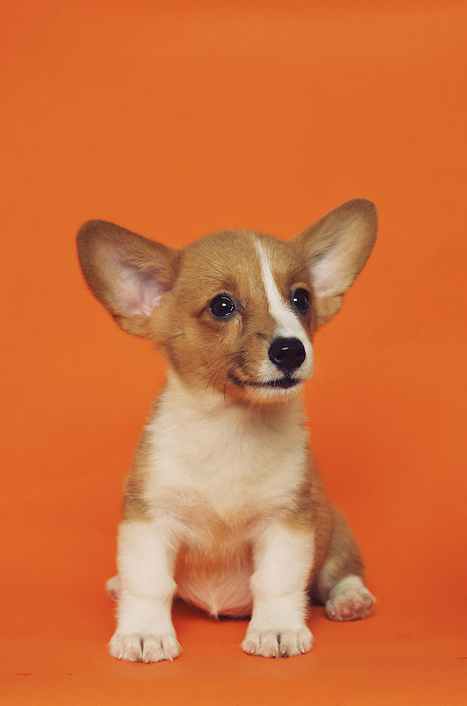

In the shop
Pet essentials
Beyond grooming, the shop stocks everyday needs for your dog:
- Treats
- Leashes
- More pet supplies in store
Pet grooming · Cherokee Street

The corner shop for clean dogs
Murphy's Mutts and Cuts is a women-owned grooming shop on Cherokee Street in St. Louis. Full-service grooming plus pet essentials like treats and leashes, all on one friendly block.
Baths, trims, and more. Bring your dog in, and take them home clean and trimmed.
One shop, one block, one phone call. That is the whole process.
Grooming first, with the everyday supplies to match.
A proper wash and dry that leaves coats soft and clean.
Trimming and shaping for your dog.
Ask about the rest of the grooming menu when you call.
Reviews name Missy, one of the groomers at Murphy's Mutts and Cuts. Customers describe her as the best, and say their dogs come home looking excellent.
Murphy's Mutts and Cuts is a women-owned business on Cherokee Street. The shop treats neighborhood dogs like family, and the reviews show it.
In the shop
Beyond grooming, the shop stocks everyday needs for your dog:
Find the blue storefront on Cherokee Street.

Murphy's Mutts and Cuts
2307 Cherokee St
St Louis, MO
| Tuesday | 9:00 AM to 5:00 PM |
| Wednesday | 9:00 AM to 5:00 PM |
| Thursday | 9:00 AM to 5:00 PM |
| Friday | 9:00 AM to 5:00 PM |
| Saturday | 9:00 AM to 5:00 PM |
| Sunday | Closed |
| Monday | Closed |